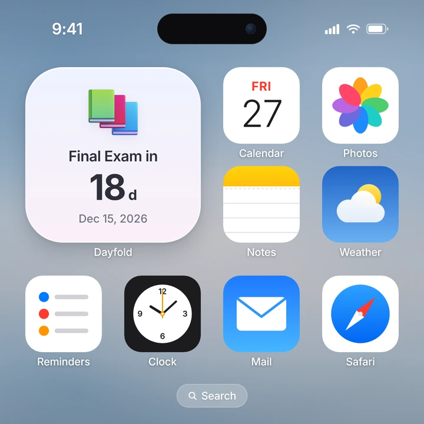

Put an Exam Countdown on Your iPhone Lock Screen
iPhone does not ship a built-in widget that counts down to a date you choose, so a test date will not appear on the Lock Screen by itself. In Dayfold you create a moment for the exam day, then add a Lock Screen or Home Screen widget; the widget shows how many days remain and updates as the date gets closer. If you have more than one paper, the free plan allows four active moments. Dayfold is a date countdown, not a study timer or a revision planner, and there is no verified “exam theme.”

Quick facts
| What you set | The exam date (a future date) |
|---|---|
| What you see | Days remaining on a Lock Screen or Home Screen widget |
| Several exams | Up to four active moments on the free plan |
| System | iPhone, iOS 17 or later |
| Reminders | Optional; on-the-day, 30-day and 100-day reminders are free |
| Not included | Study timer, syllabus tracker, or an exam-specific theme |
| Price | Free to download; Dayfold Pro optional (monthly or one-time Lifetime) |
Why a widget helps more than a calendar alert
A calendar notification disappears after you dismiss it. A countdown in the Lock Screen widget tray is still there when you pick up the phone at 7 a.m. That is the whole job: one number, the name of the paper, and the date.
Dayfold is built for that job. You are not getting a Pomodoro study timer here (that is a different Foca Studio app, and it is not the subject of this page). You are getting a date card you can pin.
How to add an exam countdown
- Download Dayfold and open it once, so iOS lists its widgets.
- Tap + to open Create a Moment.
- Name the moment after the paper or the exam board (“Biology final,” “Bar exam,” “HSK 5”) and set Date to the exam day. If the exam is a morning paper, the date alone is enough — Dayfold’s public widgets show a day count, not a ticking clock.
- Optional: mark it Primary if it should be the default widget. Optional: set a reminder. A short exam season usually does not need a 100-day milestone, but an on-the-day reminder is free.
- Save and choose a card style. Emoji, Flip Calendar and Ticket are free.
- Add it to the Lock Screen: touch and hold, tap Customize, tap Add Widgets, choose Dayfold, and place the widget. On iOS 17 or later, tap the widget to select this exam if another moment is pinned.
- Optionally add a small or medium Home Screen widget the same way from the Home Screen gallery.

For two or three dates in the same season, repeat steps 2–5 for each paper. The free plan allows four active moments. If you need more than four at once, Dayfold Pro unlocks unlimited moments.
After the exam
Once the date has passed, Dayfold starts counting up: official site copy describes the card as the name plus “for” and the day count, and the Lock Screen widget as “N days ago.” You can leave it (a small record that the exam happened) or delete it and add the next one. There is no verified auto-roll into “next year’s exam” unless you create that date yourself.
What Dayfold leaves out
No exam skin, no grade book, and no claim that a widget will make you study. It is a clear day count next to a name you choose.
Free and optional Pro
Free to download, no account, content stored on your iPhone (no cloud sync). Four active moments and three card styles are free. Pro is optional: monthly or a one-time Lifetime purchase, with unlimited moments, every style, advance reminders and extra milestones.
FAQ
Can I put an exam countdown on my iPhone Lock Screen?
Yes. iPhone does not include a built-in countdown-to-a-date widget, so you need an app that offers one. In Dayfold, create a moment for the exam date, then add a Lock Screen widget. Dayfold requires iOS 17 or later.
Can I track more than one exam at a time?
Yes. The free plan allows four active moments, so you can keep up to four exam dates at once. Dayfold Pro unlocks unlimited moments.
Does Dayfold remind me on the morning of the exam?
You can turn on an on-the-day reminder when you create the moment. On-the-day, 30-day and 100-day reminders are free. Notifications are optional and need your permission.
Is Dayfold a study timer?
No. Dayfold is a countdown and days-since widget app. It does not time study sessions.
Is Dayfold free?
Yes. Dayfold is free to download. You can keep four active moments and use three card styles without paying. Dayfold Pro is an optional monthly plan or one-time Lifetime purchase.